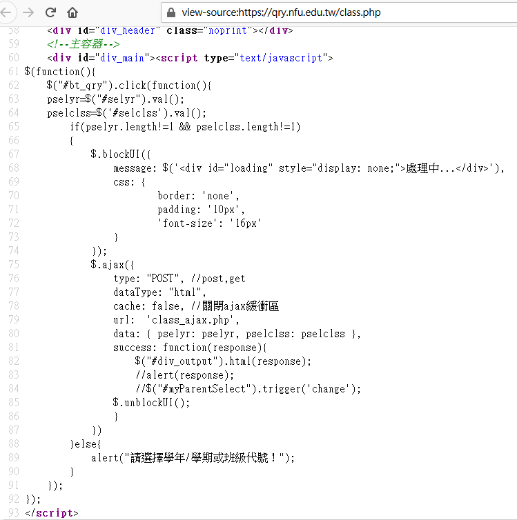

分組專題 <<
Previous Next >> Topic 1
Topic 0
網際內容管理程式練習題目:
- 學習如何解讀帶有 AJAX 程式架構的網際伺服器內容
- 學習如何利用 Python requests 中的 post 方法, 向伺服器送出表單資料
- 學習如何利用 bs4 解讀 HTML 檔案
- 學習如何利用 Python 程式執行操作系統指令 (os Module)
- 學習如何將網際程式伺服至 Heroku 雲端主機
2021 Spring 的網際內容管理課程將從學校的課程主機中擷取資料開始:
學校的課程相關主機為: https://qry.nfu.edu.tw/
其中包括
查詢各班課表用: https://qry.nfu.edu.tw/class.php
查詢教師課表: https://qry.nfu.edu.tw/teacher.php
查詢教室課表: https://qry.nfu.edu.tw/classroom.php
查詢課程: https://qry.nfu.edu.tw/classname.php
查詢班級名條: https://qry.nfu.edu.tw/classlist.php
而與學校排課相關的專案.
https://github.com/mdecourse/GeneticAlgorithmUniversityClassScheduler
2018_UNIVERSITY TIMETABLE SCHEDULING USING METAHEURISTIC ADAPTIVE-ELITIST GENETIC ALGORITHM.pdf
Beginning PyQt - 2020 ebook.pdf
以下則為可用來擷取課程主機的參考程式碼:
class.php 網頁原始碼中 AJAX 程式段:

在 class.php 頁面以表單選擇四技設一甲後進行查詢, 所得超文件中, 以網頁開發者中的檢測器可以查得所傳回的 table class 名稱為 tbcls:
取得四技設一甲 2021 Spring 班級課表, 存為 html 後以內定瀏覽器開啟:
import requests
import bs4
# for os.environ and os.system()
import os
# for geting html file path
import pathlib
# for pythn 3.9
proxy = 'http://[2001:288:6004:17::69]:3128'
os.environ['http_proxy'] = proxy
os.environ['HTTP_PROXY'] = proxy
os.environ['https_proxy'] = proxy
os.environ['HTTPS_PROXY'] = proxy
'''
url: 'class_ajax.php',
data: { pselyr: pselyr, pselclss: pselclss
'''
semester = '1092'
classno = '42311'
column = True
if semester == None:
semester = '1091'
if classno == None:
# 42311 is 設一甲
classno = '42311'
headers = {'X-Requested-With': 'XMLHttpRequest'}
url = 'https://qry.nfu.edu.tw/class_ajax.php'
post_var = {'pselyr': semester, 'pselclss': classno}
result = requests.post(url, data = post_var, headers = headers)
soup = bs4.BeautifulSoup(result.content, 'lxml')
# 先除掉所有 anchor
for a in soup.findAll('a'):
# bs3 語法
#a.replaceWithChildren()
# bs4 語法, 將標註與內容拆開
a.unwrap()
# 根據輸出設定, 取出 class='tbcls' 的 table 資料
table = soup.find('table', {'class': 'tbcls'})
# 重建 table, 設定邊線為 1 pixel
output = "<table border='1'>"
for i in table.contents:
# 利用 replace 復原
output += str(i).replace("&nbsp", " ")
output += "</table>"
# print(output)
# 將 output 寫入 w1_class_local.html
with open("w1_class_local.html", "w", encoding="utf-8") as file:
file.write(output)
# 利用 os.system() 以 default browser 開啟 w1_class_local.html
filePath = pathlib.Path(__file__).parent.absolute()
#print(filePath)
# set firefox as default browser and start url to open html file
os.system("start file:///" + str(filePath) + "\\w1_class_local.html")
2021 Spring GDrive 下載區 (for @gm users only)
kmol2021_spring_v1 只安裝 Python 3.9, Git, Putty, ShareX 與 processexplorer
kmol2021_spring_v2 則安裝 Python 3.9, Git, Putty, ShareX 與 processexplorer 外, Python 又加裝 flask, flask_cors, bs4, lxml, pelican, markdown, leo
升級可攜隨身程式系統與其他工具的主要目的, 在確保先前的使用模式與所開發的程式碼, 可以在最新的環境中執行.
但是目前 Python 3.9 仍無法執行 Tensorflow 2.0, 因此若需使用 Tensorflow 2.0 必須退回 Python 3.8.5 環境.
主題:
https://github.com/mdecourse/nfulist/discussions/2
根據 https://qry.nfu.edu.tw/class.php
班級課表查詢程式:
w1_class_local.py
<script type="text/javascript">
$(function(){
$("#bt_qry").click(function(){
pselyr=$("#selyr").val();
pselclss=$('#selclss').val();
if(pselyr.length!=1 && pselclss.length!=1)
{
$.blockUI({
message: $('<div id="loading" style="display: none;">處理中...</div>'),
css: {
border: 'none',
padding: '10px',
'font-size': '16px'
}
});
$.ajax({
type: "POST", //post,get
dataType: "html",
cache: false, //關閉ajax緩衝區
url: 'class_ajax.php',
data: { pselyr: pselyr, pselclss: pselclss },
success: function(response){
$("#div_output").html(response);
//alert(response);
//$("#myParentSelect").trigger('change');
$.unblockUI();
}
})
}else{
alert("請選擇學年/學期或班級代號！");
}
});
});
</script>
選單參數與對應值
selyr
<option value="1092" selected>109學年度第2學期</option>
<option value="1091" >109學年度第1學期</option>
<option value="1083" >108學年度第3學期</option>
<option value="1082" >108學年度第2學期</option>
selclss
<option value="42310" >42310四設計一訓</option>
<option value="42311" >42311四設計一甲</option>
<option value="42312" >42312四設計一乙</option>
<option value="42319" >42319四設計一攜</option>
<option value="42320" >42320四設計二訓</option>
<option value="42321" >42321四設計二甲</option>
<option value="42322" >42322四設計二乙</option>
<option value="42329" >42329四設計二攜</option>
<option value="42330" >42330四設計三訓</option>
<option value="42331" >42331四設計三甲</option>
<option value="42332" >42332四設計三乙</option>
<option value="42339" >42339四設計三攜</option>
<option value="42340" >42340四設計四訓</option>
<option value="42341" >42341四設計四甲</option>
<option value="42342" >42342四設計四乙</option>
<option value="42349" >42349四設計四攜</option>
ajax 透過 post 送出對應變數值
url: 'class_ajax.php',
data: { pselyr: pselyr, pselclss: pselclss },
利用 Python requests 以 post 送出查詢變數後取回查詢結果:
以下為綜一館八樓電腦輔助設計室 2021 Spring 排課表, 程式取回資料後存為 html 後以內定的瀏覽器開啟:
w1_classroom_local.py
import requests
import bs4
# for os.environ and os.system
import os
# for geting html file path
import pathlib
# for pythn 3.9
proxy = 'http://[2001:288:6004:17::69]:3128'
os.environ['http_proxy'] = proxy
os.environ['HTTP_PROXY'] = proxy
os.environ['https_proxy'] = proxy
os.environ['HTTPS_PROXY'] = proxy
'''
url: 'jclassroom_ajax.php',
data: { pselyr: pselyr, pselclssroom: pselclssroom },
'''
semester = '1092'
classroomno = 'BGA0810'
column = True
if semester == None:
semester = '1092'
if classroomno == None:
# BGA0810 電腦輔助設計室
classroomno = 'BGA0810'
headers = {'X-Requested-With': 'XMLHttpRequest'}
url = 'https://qry.nfu.edu.tw/jclassroom_ajax.php'
post_var = {'pselyr': semester, 'pselclssroom': classroomno}
result = requests.post(url, data = post_var, headers = headers)
soup = bs4.BeautifulSoup(result.content, 'lxml')
# 先除掉所有 anchor
for a in soup.findAll('a'):
# bs3 語法
#a.replaceWithChildren()
# bs4 語法, 將標註與內容拆開
a.unwrap()
# 根據輸出設定, 取出 class='tbcls' 的 table 資料
table = soup.find('table', {'class': 'tbcls'})
# 重建 table, 設定邊線為 1 pixel
output = "<table border='1'>"
for i in table.contents:
# 利用 replace 復原
output += str(i).replace("&nbsp", " ")
output += "</table>"
#print(output)
# 將 output 寫入 w1_classroom.html
fileName = "w1_classroom.html"
with open(fileName, "w", encoding="utf-8") as file:
file.write(output)
# 利用 os.system() 以 default browser 開啟 w1_class_local.html
filePath = pathlib.Path(__file__).parent.absolute()
#print(filePath)
# set firefox as default browser and start url to open html file
os.system("start file:///" + str(filePath) + "\\" + fileName)
若根據 https://qry.nfu.edu.tw/jclassroom.php
與
<option value="BGA0611" >BGA0611 (研討室(三)_綜合工程一館 6F)</option>
<option value="BGA0620" >BGA0620 (動態系統實驗室_綜合工程一館 6F)</option>
<option value="BGA0640" >BGA0640 (創意設計室_綜合工程一館 6F)</option>
<option value="BGA0710" >BGA0710 (研討室(二)_綜合工程一館 7F)</option>
<option value="BGA0730" >BGA0730 (研討室(一)_綜合工程一館 7F)</option>
<option value="BGA0760" >BGA0760 (逆向快速成型實驗室_綜合工程一館 7F)</option>
<option value="BGA0810" >BGA0810 (電腦輔助設計室_綜合工程一館 8F)</option>
<option value="BGA0820" >BGA0820 (智慧感測與致動實驗室_綜合工程一館 8F)</option>
<option value="BGA0823" >BGA0823 (新產品創意設計中心_綜合工程一館 8F)</option>
<option value="BGA0830" >BGA0830 (電腦輔助繪圖室_綜合工程一館 8F)</option>
<option value="BGA0842" >BGA0842 (機械元件設計實驗室_綜合工程一館 8F)</option>
<option value="BGA0901" >BGA0901 (國際會議廳_綜合工程一館 9F)</option>
<option value="BGA0911" >BGA0911 (機電實驗室_綜合工程一館 9F)</option>
則可以查詢各教室排課結果:
w1_classroom_local.py
import requests
import bs4
'''
# 假如使用 Python 3.9 執行則必須自行在程式碼中設定代理主機
import os
proxy = 'http://[2001:288:6004:17::69]:3128'
os.environ['http_proxy'] = proxy
os.environ['HTTP_PROXY'] = proxy
os.environ['https_proxy'] = proxy
os.environ['HTTPS_PROXY'] = proxy
'''
'''
url: 'jclassroom_ajax.php',
data: { pselyr: pselyr, pselclssroom: pselclssroom },
'''
semester = '1092'
classroomno = 'BGA0810'
column = True
if semester == None:
semester = '1092'
if classroomno == None:
# BGA0810 電腦輔助設計室
classroomno = 'BGA0810'
headers = {'X-Requested-With': 'XMLHttpRequest'}
url = 'https://qry.nfu.edu.tw/jclassroom_ajax.php'
post_var = {'pselyr': semester, 'pselclssroom': classroomno}
result = requests.post(url, data = post_var, headers = headers)
soup = bs4.BeautifulSoup(result.content, 'lxml')
# 先除掉所有 anchor
for a in soup.findAll('a'):
a.replaceWithChildren()
# 根據輸出設定, 取出 class='tbcls' 的 table 資料
table = soup.find('table', {'class': 'tbcls'})
# 重建 table, 設定邊線為 1 pixel
output = "<table border='1'>"
for i in table.contents:
# 利用 replace 復原
output += str(i).replace("&nbsp", " ")
output += "</table>"
print(output)
有關專題分組:
請問我們打算如何解決 http://mde.tw/cd2021/content/Stage1.html 分組定組序與建立分組專題連結 html 的問題?
延伸練習:
- 請各組修改上述程式碼, 直接將查詢結果存為 html, 並且直接呼叫 firefox 瀏覽器開啟所建立的超文件檔案.
- 請各組將上述兩則程式套入 Flask, 改寫成網際程式, 並分別在 Windows 10 與 Ubuntu 20.04 中執行.
- 請各組設法為程將上述程式改為 Flask based 後, 將程式部署在 Heroku 中執行.
- 請問上述的近端或網際程式架構, 是否可以應用在機械設計的某一個過程? (網際, AJAX, Heroku 部署).
額外處理:
https://forum.eng.nfu.edu.tw/t/topic/105/2
針對 CMSiMDE 無法正確對 config/content.htm 分頁時能夠列出建議事項, 協助用戶解決問題.
問題:
CMSiMDE 動態網站如何進行分頁?
CMSiMDE 的靜態網頁如何產生?
為何網際內容管理系統要分動態與靜態網頁?
CMSiMDE 的網站分頁架構源自 https://www.cmsimple.org/en/, 其中一度使用 https://cherrypy.org/, 最後才改為現在的 https://github.com/pallets/flask.
CMSiMDE 自 2013 年底開發至今, 可能需要重新改寫了:-) anybody??
延伸練習:
請各組研究一下 https://github.com/mdecourse/cmsimde 中的分頁程式, 並嘗試編寫一個能夠協助使用者在無法正確編輯動態網頁時進行 Debug 用.
在處理特定目錄中檔案內容字串置換時, 可以利用下列程式碼:
walk_in_dir_and_replace_string.py
import os
findText = """content to remove"""
for dname, dirs, files in os.walk("path_name"):
for fname in files:
if fname[-5:] == ".html":
print(fname)
fpath = os.path.join(dname, fname)
with open(fpath, encoding="utf-8") as f:
s = f.read()
s = s.replace(findText, "")
with open(fpath, "w", encoding="utf-8") as f:
f.write(s)
分組專題 <<
Previous Next >> Topic 1